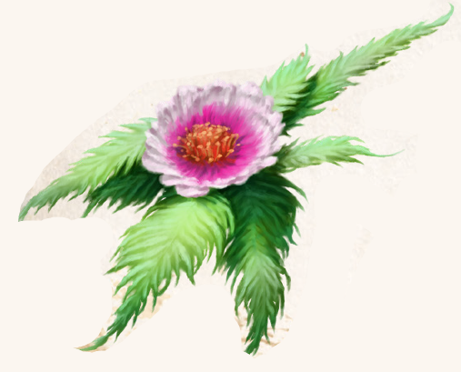

Die Malomis gibt den Menschen von jeher Rätsel auf. Einerseits ist die Pflanze, was ihre Pflege angeht, sehr anspruchsvoll und nur erfahrenen Botanikern gelingt es, sie zweimal im Jahr zur Blüte zu bringen. Andererseits ist sie dem Klima gegenüber tolerant und gedeiht in Vallusa ebenso wie in Hôt Alem. Darüber hinaus wurde die Pflanze noch nie in der aventurischen Wildnis - weder der des Südens noch der des Nordens - gesichtet. Die existierenden Exemplare werden ausschließlich in Gärten gezogen und sollen angeblich allesamt von derselben Pflanze abstammen, die ein Unbekannter dem Tsatempel von Silas übergeben hat. Streng genommen ist die niedrigwachsende, beinahe stängellose Blume mit ihrem ausladenden, fiedrigen Blätterwerk eine Gebirgspflanze, wenngleich sie in aventurischen Gebirgen nicht vorkommt. Die aus dem Blätterzentrum wachsende Blüte zeigt sich im Tsa weiß und im Rondra rot, doch nur die zweite, die Rondrablüte, entfaltet ihre wundersame Wirkung. Ihr Duft erzeugt euphorische Gefühle, denn der oder die Riechende nimmt just den Geruch wahr, den er oder sie sich in diesem Moment wünscht. Malomis-Wasser, ein mit Carlog versetztes Duftwasser, konserviert die Wirkung der frischen Blüte in leicht abgeschwächter Form.
Das aus Rosenwasser und einer Malomisblüte bestehende Parfüm „1001 Rausch“ wird nach einem Geheimrezept in Belhanka hergestellt und lässt den Anwender, ganz dem Geist der rahjagefälligen Stadt entsprechend, verführerisch wirken - bisweilen so sehr, dass er oder sie sich vor Interessenten kaum retten kann.
Verbreitung:
Landschaftstyp: keine
Regionen: kommt wild nicht vor, nur in Gärten von Tempeln und Parfümherstellern (streng bewacht)
Suchschwierigkeit: nicht wild auffindbar
Bestimmungsschwierigkeit: -4
Anwendungen: 1/1/1/2/2/2
Wirkung:
Roh:
Berührung: keine
Einatmung: Duftet immer nach dem, was die Riechende momentan am berauschendsten empfindet.
Jede Pflanze ist unterschiedlich potent.
Für jede Pflanze bzw. Anwendung wird 1W6 gewürfelt.
Alle, deren SK unter dem erwürfelten Wert liegt, werden vom Duft für ebensoviele Minuten betört und können sich nicht von der Pflanze abwenden oder weiter entfernen.
Um sich danach loszureißen, ist eine um -1 erschwerte Probe auf Selbstbeherrschung zu bestehen, sonst beginnt die Wirkung erneut, tritt jedoch insgesamt nur zwei Mal ein.
Verzehr: keine
Verarbeitet: siehe Rezepte
Preis: 16 / 32 Silbertaler
Rezepte:
Elixiere: 1001 Rausch
Volksbrauchtum: Die in Belhanka ansässige Familie ya Arinori stellt nach einem Geheimrezept 1001 Rausch her.
Es wird hauptsächlich von der Rahjakirche angekauft, ist aber auch frei im Handel verfügbar.
Das Geheimnis, so wird spekuliert, ist eine winzigste Prise einer anderen Pflanze, welche eine suchterzeugende Komponente hinzufüge.
Haltbarkeit:
Roh: siehe Haltbarmachung
Verarbeitet: Malomis-Wasser 8 Wochen